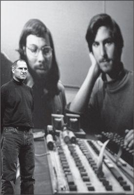

At the 2006 Macworld, in front of a slide of him and Wozniak from thirty years earlier
His personality was reflected in the products he created. Just as the core of Apple’s philosophy, from the original Macintosh in 1984 to the iPad a generation later, was the end-to-end integration of hardware and software, so too was it the case with Steve Jobs: His passions, perfectionism, demons, desires, artistry, devilry, and obsession for control were integrally connected to his approach to business and the products that resulted.
乔布斯的个性体现在他创造的产品里。正如苹果的核心理念，从1984年最初的麦金塔到整整一代人以后的iPad,—直都是端到端的软硬件整合，乔布斯本人也是如此：他的个性、激情、完美主义、阴暗面、欲望、艺术气质、残酷以及控制欲，这一切都跟他的经营理念和最终的创新产品交织在一起。
The unified field theory that ties together Jobs’s personality and products begins with his most salient trait: his intensity. His silences could be as searing as his rants; he had taught himself to stare without blinking. Sometimes this intensity was charming, in a geeky way, such as when he was explaining the profundity of Bob Dylan’s music or why whatever product he was unveiling at that moment was the most amazing thing that Apple had ever made. At other times it could be terrifying, such as when he was fulminating about Google or Microsoft ripping off Apple.
这种融合在其个性和产品中的最显著的特征之一就是极致。他的沉默跟他的咆哮一样骇人，他训练自己可以一直盯着人看而不眨眼。有时候这种极致是迷人的，那种鬼才式的迷人，比如在他热切地解释鲍勃·迪伦音乐之深刻的时候，或是在掲幕产品时，无论什么在他口中都能变成苹果有史以来最不可思议的产品。然而有时，他的极致又很恐怖，例如当他厉声谴责谷歌或微软对苹果剽窃的时候。
This intensity encouraged a binary view of the world. Colleagues referred to the hero/shithead dichotomy. You were either one or the other, sometimes on the same day. The same was true of products, ideas, even food: Something was either “the best thing ever,” or it was shitty, brain-dead, inedible. As a result, any perceived flaw could set off a rant. The finish on a piece of metal, the curve of the head of a screw, the shade of blue on a box, the intuitiveness of a navigation screen—he would declare them to “completely suck” until that moment when he suddenly pronounced them “absolutely perfect.” He thought of himself as an artist, which he was, and he indulged in the temperament of one.
这种极致促成了他对世界的二元论观点。苹果的同事们称其为乔布斯的天才/白痴二分法。你不是这个就是那个，有时候一个人同一天就能得到这两种评价。这一观点同样适用于他对产品、对想法，甚至对食物的看法：不是“史上最棒”，就是差劲儿、脑残、没法儿吃。因此，发现任何瑕疵都可能引发乔布斯一顿咆哮。一道金属涂层、一颗螺丝钉的曲线、一只机箱上蓝色的深浅、一款导航屏幕的直观性——他会一直骂它们“烂透了”，直到某个时刻他突然称赞它们“完美至极”。他把自己看做」个艺术家，他也确实是，所以他纵容自己具有艺术家的性情。
His quest for perfection led to his compulsion for Apple to have end-to-end control of every product that it made. He got hives, or worse, when contemplating great Apple software running on another company’s crappy hardware, and he likewise was allergic to the thought of unapproved apps or content polluting the perfection of an Apple device. This ability to integrate hardware and software and content into one unified system enabled him to impose simplicity. The astronomer Johannes Kepler declared that “nature loves simplicity and unity.” So did Steve Jobs.
他对完美的追求使得他要求苹果对每一款产品都要有端到端的控制。如果看到伟大的苹果软件在其他公司的蹩脚硬件上运行，他就会浑身难受，甚至更糟；同样，一想到让未经审核的应用或内容污染苹果设备的完美，他也会有过敏反应。这种把硬件、软件和内容整合成统一系统的能力使他可以贯彻简洁的理念。天文学家约翰尼斯·开普勒（JohannesKepler）曾说过，“自然喜欢简涪与统一”。史蒂夫·乔布斯也这么说。
This instinct for integrated systems put him squarely on one side of the most fundamental divide in the digital world: open versus closed. The hacker ethos handed down from the Homebrew Computer Club favored the open approach, in which there was little centralized control and people were free to modify hardware and software, share code, write to open standards, shun proprietary systems, and have content and apps that were compatible with a variety of devices and operating systems. The young Wozniak was in that camp: The Apple II he designed was easily opened and sported plenty of slots and ports that people could jack into as they pleased. With the Macintosh Jobs became a founding father of the other camp. The Macintosh would be like an appliance, with the hardware and software tightly woven together and closed to modifications. The hacker ethos would be sacrificed in order to create a seamless and simple user experience.
数字世界最根本的分歧是开放与封闭的对立，而对一体化系统的本能热爱让乔布斯坚定地站在了封闭一边。从家酿计算机俱乐部传承下来的黑客精神倾向于开放的方式，几乎没有中夹控制，人们可以自由地修改硬件和软件、共享代码、用开放的标准写程序、避开专利系统，有跟多种设备和操作系统兼容的内容和应用。年轻的沃兹尼亚克就曾在那个阵营：他设计的AppleII就很容易拆开，而且预留了很多插槽和端口可以让人随心所欲地使用。而从麦金塔开始，乔布斯成为了另一个阵营的开创者。麦金塔就像是一部电器，硬件和软件紧密结合，无法修改。这牺牲了黑客精神，却创造出一种无缝而简单的用户体验。
This led Jobs to decree that the Macintosh operating system would not be available for any other company’s hardware. Microsoft pursued the opposite strategy, allowing its Windows operating system to be promiscuously licensed. That did not produce the most elegant computers, but it did lead to Microsoft’s dominating the world of operating systems. After Apple’s market share shrank to less than 5%, Microsoft’s approach was declared the winner in the personal computer realm.
之后乔布斯下令，麦金塔的操作系统不会供其他任何公司的硬件使用。微软则采取截然相反的策略，允许Windows操作系统在各种机器上授权使用。这虽然没有催生出最优雅的计算机，但是却帮助微软统治了操作系统世界。当苹果的市场份额缩小到5%以下时，微软的策略被视为个人电脑领域的胜利者。
In the longer run, however, there proved to be some advantages to Jobs’s model. Even with a small market share, Apple was able to maintain a huge profit margin while other computer makers were commoditized. In 2010, for example, Apple had just 7% of the revenue in the personal computer market, but it grabbed 35% of the operating profit.
然而从长期看，乔布斯的模式证明是有一些优势的。当其他计算机制造商都在商品化时，苹果即使以很小的市场份额都能保持极髙的利润率。例如在2010年，苹果的收入只占个人电脑市场的7%，但是却获得了营业利润的35%。
More significantly, in the early 2000s Jobs’s insistence on end-to-end integration gave Apple an advantage in developing a digital hub strategy, which allowed your desktop computer to link seamlessly with a variety of portable devices. The iPod, for example, was part of a closed and tightly integrated system. To use it, you had to use Apple’s iTunes software and download content from its iTunes Store. The result was that the iPod, like the iPhone and iPad that followed, was an elegant delight in contrast to the kludgy rival products that did not offer a seamless end-to-end experience.
更重要的是，在21世纪初，乔布斯对于端到端一体化的坚持使苹果得到发展数字中枢策略的优势，让用户可以桌上电脑跟各种便携设备无缝连接。例如，iPod就是这个紧密接合的封闭系统的一部分。要使用它，你就必须使用苹果的iTunes软件，并从iTunes商店下载内容。其结果就是，iPod高雅而令人愉悦，正如后来的iPhone和iPad—样，跟那些不提供端到端无缝体验的杂牌竞争产品形成鲜明的对比。
The strategy worked. In May 2000 Apple’s market value was one-twentieth that of Microsoft. In May 2010 Apple surpassed Microsoft as the world’s most valuable technology company, and by September 2011 it was worth 70% more than Microsoft. In the first quarter of 2011 the market for Windows PCs shrank by 1%, while the market for Macs grew 28%.
这个策略行之有效。在2000年5月，苹果的市值是微软的1/20。到2010年5月，苹果超过微软成为全球最有价值的科技公司。到2011年9月，苹果的价值髙出微软70%。2011年第一季度，Windows个人电脑的市场份额缩水1%，而Mac的市场份额增长了28%。
By then the battle had begun anew in the world of mobile devices. Google took the more open approach, and it made its Android operating system available for use by any maker of tablets or cell phones. By 2011 its share of the mobile market matched Apple’s. The drawback of Android’s openness was the fragmentation that resulted. Various handset and tablet makers modified Android into dozens of variants and flavors, making it hard for apps to remain consistent or make full use if its features. There were merits to both approaches. Some people wanted the freedom to use more open systems and have more choices of hardware; others clearly preferred Apple’s tight integration and control, which led to products that had simpler interfaces, longer battery life, greater user-friendliness, and easier handling of content.
彼时彼刻，移动设备领域烽烟再起。谷歌采取了开放策略，其安卓操作系统可供任何平板电脑或手机制造商使用。到2011年，谷歌的移动市场份额与苹果持平。安卓系统开放策略的不足之处在于其导致的分裂状态。不同的手机和平板电脑制造商把安卓系统修改成了几十种不同的版本和风格，难以开发一致的应用程序或充分利用其特性。两种策略都有其优点。有些人希望拥有使用更开放系统的自由，并有更多的硬件选择；其他人显然更偏爱苹果紧密的整体性和可控性，这使得产品界面更筒单、电池寿命更长、更易于操作、内容处理更容易。
The downside of Jobs’s approach was that his desire to delight the user led him to resist empowering the user. Among the most thoughtful proponents of an open environment is Jonathan Zittrain of Harvard. He begins his book The Future of the Internet—And How to Stop It with the scene of Jobs introducing the iPhone, and he warns of the consequences of replacing personal computers with “sterile appliances tethered to a network of control.” Even more fervent is Cory Doctorow, who wrote a manifesto called “Why I Won’t Buy an iPad” for Boing Boing. “There’s a lot of thoughtfulness and smarts that went into the design. But there’s also a palpable contempt for the owner,” he wrote. “Buying an iPad for your kids isn’t a means of jump-starting the realization that the world is yours to take apart and reassemble; it’s a way of telling your offspring that even changing the batteries is something you have to leave to the professionals.”
乔布斯理念的缺陷是，他那想愉悦用户的欲望导致了他不愿意对用户授权。对开放环境最有思想的倡导者之一是哈佛的乔纳森·齐特林（JonathanZittrain）。在他的著作《互联网的未来：光荣、毁灭与救赎的未来》（TheFutureoftheInternet—AndHowtoStopIt）中，开篇就是乔布斯介绍iPhone的场景，他警示世人，用“被一个控制网所束缚的无菌器材”来代替个人电脑会有怎样的不良后果。反应更强烈的还有科里·多克托罗（CoryDoctorow），他在波音波音（BoingBoing）网站撰写了一篇宣言，题目叫“我为什么不会买iPad”。“它的设计中融入了很多周到的想法和精巧的元素，但是也有对其主人显而易见的轻蔑。”他写道，“给你的孩子们买一部iPad并不会使他们认识到世界是要你们去剖析与重组的。它会吿诉你的后代，即使是换电池这样的事情你也必须要留给专业人员去做。”
For Jobs, belief in an integrated approach was a matter of righteousness. “We do these things not because we are control freaks,” he explained. “We do them because we want to make great products, because we care about the user, and because we like to take responsibility for the entire experience rather than turn out the crap that other people make.” He also believed he was doing people a service: “They’re busy doing whatever they do best, and they want us to do what we do best. Their lives are crowded; they have other things to do than think about how to integrate their computers and devices.”
对于乔布斯来说，一体化的理念事关对错。“我们做这些事情并不是因为我们是控制狂。”他解释说，“我们做这些是因为我们想创造伟大的产品，因为我们关心用户，因为我们愿意为全部的体验负责，而不是去做别人做的那些垃圾。”他相信他是在为人提供服务，“人们在忙着做他们最擅长的事情，他们希望我们去做我们最擅长的。他们的生活很繁忙，他们有其他事情要做，而不是去想怎样整合他们的计算机和电子设备。”
This approach sometimes went against Apple’s short-term business interests. But in a world filled with junky devices, inscrutable error messages, and annoying interfaces, it led to astonishing products marked by beguiling user experiences. Using an Apple product could be as sublime as walking in one of the Zen gardens of Kyoto that Jobs loved, and neither experience was created by worshipping at the altar of openness or by letting a thousand flowers bloom. Sometimes it’s nice to be in the hands of a control freak.
这种理念有时会跟苹果的短期商业利益发生冲突。但是在一个充斥着低劣设备、杂牌软件、难以预测的错谟信息和恼人的用户界面的世界里，这种理念带来了以迷人的用户体验为特征的非凡产品。使用一款苹果产品可以像走在乔布斯喜爱的京都禅意花园里一样，让人肃然起敬，而这两种体验都不是通过崇尚开放或百花齐放来实现的。落在一个控制狂手里的有时候感觉也不错。
Jobs’s intensity was also evident in his ability to focus. He would set priorities, aim his laser attention on them, and filter out distractions. If something engaged him—the user interface for the original Macintosh, the design of the iPod and iPhone, getting music companies into the iTunes Store—he was relentless. But if he did not want to deal with something—a legal annoyance, a business issue, his cancer diagnosis, a family tug—he would resolutely ignore it. That focus allowed him to say no. He got Apple back on track by cutting all except a few core products. He made devices simpler by eliminating buttons, software simpler by eliminating features, and interfaces simpler by eliminating options.
乔布斯的极致还表现在他的专注力上。他会设定优先级，把他激光般的注意力对准目标，把分散精力的事情都过滤掉。如果他开始做某件事——麦金塔早期的用户界面，iPod和iPhone的设计，把音乐公司引进iTunes商店——他就会非常专注。但是如果他不想处理某件事——法律纠纷，业务事项，他的癌症诊断，某件家事——则会坚决地忽视它。那种专注使他能够说不。他只保留几个核心产品，砍掉一切其他业务，让苹果回到正轨。他剔除按键让电子设备简单化，剔除功能让软件简单化，剔除选项让界面简单化。
He attributed his ability to focus and his love of simplicity to his Zen training. It honed his appreciation for intuition, showed him how to filter out anything that was distracting or unnecessary, and nurtured in him an aesthetic based on minimalism.
他把这种专注的能力和对简洁的热爱归功于他的禅修。禅修增强了他对直觉的信赖，教他如何过滤掉任何分散精力或不必要的事情，在他身上培养出了一种基于至简主义的审美观。
Unfortunately his Zen training never quite produced in him a Zen-like calm or inner serenity, and that too is part of his legacy. He was often tightly coiled and impatient, traits he made no effort to hide. Most people have a regulator between their mind and mouth that modulates their brutish sentiments and spikiest impulses. Not Jobs. He made a point of being brutally honest. “My job is to say when something sucks rather than sugarcoat it,” he said. This made him charismatic and inspiring, yet also, to use the technical term, an asshole at times.
遗憾的是，禅修未能使他产生一种禅意的平静或内心的平和，而这一缺憾也是他遗产的一部分。他常常深深地纠结和不耐烦，这些个性他也无意掩饰。大部分人在大脑与嘴巴之间都有个调节器，可以调整他们粗野的想法和易怒的冲动。乔布斯可不是。他很看重自己残酷诚实的一面。“我的责任是当事情搞砸了的时候说实话而不是粉饰太平。”他说。这一点使他富有魅力又能鼓舞人心，但也使他有时候，用技术词汇来说，像个浑蛋。
Andy Hertzfeld once told me, “The one question I’d truly love Steve to answer is, ‘Why are you sometimes so mean?’” Even his family members wondered whether he simply lacked the filter that restrains people from venting their wounding thoughts or willfully bypassed it. Jobs claimed it was the former. “This is who I am, and you can’t expect me to be someone I’m not,” he replied when I asked him the question. But I think he actually could have controlled himself, if he had wanted. When he hurt people, it was not because he was lacking in emotional awareness. Quite the contrary: He could size people up, understand their inner thoughts, and know how to relate to them, cajole them, or hurt them at will.
安迪·赫茨菲尔德有一次告诉我：“我真的特别想让史蒂夫回答的一个问题是，‘为什么你有时候要那么刻薄呢？’”甚至乔布斯的家人都奇怪，他到底是先天缺少能避免乱箭伤人的过滤机能呢，还是有意回避了那个机能。乔布斯称是前一种。“我就是我，你不能期待我成为另外一个人。”在我问这个问题时，他回答说。但我认为他其实本来可以控制自己，如果他想的话。当他伤害别人时，并不是因为他感情上意识不到。正相反，他可以把人看透，明白他们内心的想法，知道如何随心所欲地结交他们，诱惑他们，伤害他们。
The nasty edge to his personality was not necessary. It hindered him more than it helped him. But it did, at times, serve a purpose. Polite and velvety leaders, who take care to avoid bruising others, are generally not as effective at forcing change. Dozens of the colleagues whom Jobs most abused ended their litany of horror stories by saying that he got them to do things they never dreamed possible. And he created a corporation crammed with A players.
其实乔布斯人格中令人不快的一面并非必要。那对他的阻碍大于帮助。但有时候那确实能达到某种目的。礼貌圆滑、会小心不去伤害别人的领导者，在推动变革时一般都没那么有效。数十名被乔布斯辱骂得最厉害的同事在讲述他们冗长的悲惨故事时，最后都会说，他使他们做到了做梦都没想到的事情。
The saga of Steve Jobs is the Silicon Valley creation myth writ large: launching a startup in his parents’ garage and building it into the world’s most valuable company. He didn’t invent many things outright, but he was a master at putting together ideas, art, and technology in ways that invented the future. He designed the Mac after appreciating the power of graphical interfaces in a way that Xerox was unable to do, and he created the iPod after grasping the joy of having a thousand songs in your pocket in a way that Sony, which had all the assets and heritage, never could accomplish. Some leaders push innovations by being good at the big picture. Others do so by mastering details. Jobs did both, relentlessly. As a result he launched a series of products over three decades that transformed whole industries:
乔布斯的传奇是硅谷创新神话的典型代表：在被传为美谈的车库里开创一家企业，把它打造成全球最有价值的公司。他没有直接发明很多东西，但是他用大师级的手法把理念、艺术和科技融合在一起，就创造了未来。他欣赏图形界面的威力，就以施乐无法做到的方式设计了Mac；他领会了把1000首歌装进口袋的快乐，就以索尼尽其全部资产和传承都无法成就的方式创造了iPod。有些领导者通过统揽全局去推进创新，有些是通过把握细节。乔布斯两者兼顾，不懈地努力。正因如此，30年间他推出的一系列产品改变了一个又一个产业：
The Apple II, which took Wozniak’s circuit board and turned it into the first personal computer that was not just for hobbyists.
The Macintosh, which begat the home computer revolution and popularized graphical user interfaces.
Toy Story and other Pixar blockbusters, which opened up the miracle of digital imagination.
Apple stores, which reinvented the role of a store in defining a brand.
The iPod, which changed the way we consume music.
·AppleII，采用沃兹尼亚克的电路板并把它变成第一台不再仅供业余爱好者使用的个人计算机。
·麦金塔，引发了家用电脑革命并普及了图形用户界面。
·《玩具总动员》和其他皮克斯大片，开创了数字影像的奇迹。
·苹果零售店，重新塑造了商店在品牌定义中的角色。
·iPod,改变了我们消费音乐的方式。
The iTunes Store, which saved the music industry.
The iPhone, which turned mobile phones into music, photography, video, email, and web devices.
The App Store, which spawned a new content-creation industry.
The iPad, which launched tablet computing and offered a platform for digital newspapers, magazines, books, and videos.
iCloud, which demoted the computer from its central role in managing our content and let all of our devices sync seamlessly.
And Apple itself, which Jobs considered his greatest creation, a place where imagination was nurtured, applied, and executed in ways so creative that it became the most valuable company on earth.
·iTunes商店，让音乐产业重获新生。
·iPhone,把移动电话变成了音乐、照片、视频、邮件和网络设备。
·应用商店（AppStore），生成新的内容创造产业。
·iPad,推出平板计算技术，为数字报纸、杂志、书籍和视频提供了平台。
·iCloud,使计算机不再担任管理我们内容的中心角色，并让我们的电子设备无缝同步。
·苹果公司本身，乔布斯认为这是他最伟大的创作。在这里，想象力被培育、应用和执行的方式极具创造力，使苹果成为了全球最有价值的公司。
Was he smart? No, not exceptionally. Instead, he was a genius. His imaginative leaps were instinctive, unexpected, and at times magical. He was, indeed, an example of what the mathematician Mark Kac called a magician genius, someone whose insights come out of the blue and require intuition more than mere mental processing power. Like a pathfinder, he could absorb information, sniff the winds, and sense what lay ahead.
他很聪明吗？不，不是格外聪明。应该说，他是个天才。他的奇思妙想都是本能的、不可预见的，有时是充满魔力的。他真是数学家马克·卡克（MarkKac）所说的那种魔术师天才，他的洞见会不期而至，更多地要求直觉而非大脑的处理能力。他像个探路者一样，可以吸收信息，嗅到风中的气味，对前路先知先觉。
Steve Jobs thus became the greatest business executive of our era, the one most certain to be remembered a century from now. History will place him in the pantheon right next to Edison and Ford. More than anyone else of his time, he made products that were completely innovative, combining the power of poetry and processors. With a ferocity that could make working with him as unsettling as it was inspiring, he also built the world’s most creative company. And he was able to infuse into its DNA the design sensibilities, perfectionism, and imagination that make it likely to be, even decades from now, the company that thrives best at the intersection of artistry and technology.
史蒂夫·乔布斯就这样成为我们这个时代的一位企业管理者，一个世纪以后他一定还会被人们铭记。在历史的万神殿里，他的位置就在爱迪生和福特的身旁。在他的时代，他超越众人，创造了极具创新性的产品，把诗歌和处理器的力量完美结合。他的粗暴使得跟他一起工作既让人不安又令人振奋，而他借此打造了世界上最具创造力的公司。他能够在苹果的DNA中融入设计的敏感、完美主义和想象力，使之很可能，甚至此后几十年，都是在艺术与科技的交汇处成长得最茁壮的公司。
Biographers are supposed to have the last word. But this is a biography of Steve Jobs. Even though he did not impose his legendary desire for control on this project, I suspect that I would not be conveying the right feel for him—the way he asserted himself in any situation—if I just shuffled him onto history’s stage without letting him have some last words.
传记作者理应是为传记作结语的人，但这是史蒂夫·乔布斯的传记。尽管他没有把他那传奇般的控制欲强加于这个项目，但我如果不让他最后说几句话就这样把他推上历史的舞台，我怀疑自己无法准确地传达出他的那种感觉——他在任何情况下展现自我的那种方式。
Over the course of our conversations, there were many times when he reflected on what he hoped his legacy would be. Here are those thoughts, in his own words:
在我们交谈的过程中，他屡次谈到他希望自己留下什么样的遗产。以下就是那些想法，是他自己的话：
My passion has been to build an enduring company where people were motivated to make great products. Everything else was secondary. Sure, it was great to make a profit, because that was what allowed you to make great products. But the products, not the profits, were the motivation. Sculley flipped these priorities to where the goal was to make money. It’s a subtle difference, but it ends up meaning everything: the people you hire, who gets promoted, what you discuss in meetings.
我的激情所在是打造一家可以传世的公司，这家公司里的人动力十足地创造伟大的产品。其他一切都是第二位的。当然，能赚钱很棒，因为那样你才能够制造伟大的产品。但是动力来自产品，而不是利润。斯卡利本末倒置，把赚钱当成了目标。这只是个微妙的差别，但其结果却会影响每一件事：你聘用谁，提拔谁，会议上讨论什么事情。
Some people say, “Give the customers what they want.” But that’s not my approach. Our job is to figure out what they’re going to want before they do. I think Henry Ford once said, “If I’d asked customers what they wanted, they would have told me, ‘A faster horse!’” People don’t know what they want until you show it to them. That’s why I never rely on market research. Our task is to read things that are not yet on the page.
有些人说：“消费者想要什么就给他们什么。”但那不是我的方式。我们的责任是提前一步搞清楚他们将来想要什么。我记得亨利·福特曾说过，“如果我最初是问消费者他们想要什么，他们应该是会告诉我，‘要一匹更快的马！’”人们不知道想要什么，直到你把它摆在他们面前。正因如此，我从不依靠市场研究。我们的任务是读懂还没落到纸面上的东西。
Edwin Land of Polaroid talked about the intersection of the humanities and science. I like that intersection. There’s something magical about that place. There are a lot of people innovating, and that’s not the main distinction of my career. The reason Apple resonates with people is that there’s a deep current of humanity in our innovation. I think great artists and great engineers are similar, in that they both have a desire to express themselves. In fact some of the best people working on the original Mac were poets and musicians on the side. In the seventies computers became a way for people to express their creativity. Great artists like Leonardo da Vinci and Michelangelo were also great at science. Michelangelo knew a lot about how to quarry stone, not just how to be a sculptor.
宝丽来的埃德温·兰德曾谈到人文与科学的交集。我喜欢那个交集。那里有秤魔力。有很多人在创新，但那并不是我事业最主要的与众不同之处。苹果之所以能与人们产生共鸣，是因为在我们的创新中深藏着一种人文精神。我认为伟大的艺术家和伟大的工程师是相似的，他们都有自我表达的欲望。事实上最早做Mac的最优秀的人里，有些人同时也是诗人和音乐家。在20世纪70年代，计算机成为人们表现创造力的一种方式。一些伟大的艺术家，像列奥纳多·达·芬奇和米开朗基罗，同时也是伟大的科学家。米开朗基罗懂很多关于采石的知识，他不是只知道如何雕塑。
People pay us to integrate things for them, because they don’t have the time to think about this stuff 24/7. If you have an extreme passion for producing great products, it pushes you to be integrated, to connect your hardware and your software and content management. You want to break new ground, so you have to do it yourself. If you want to allow your products to be open to other hardware or software, you have to give up some of your vision.
人们付我们钱去为他们整合东西，因为他们不能7天24小时地去想这些。如果你对生产伟大的产品有极大的激情，它会推着你去追求一体化，去把你的硬件、软件以及内容管理都整合在一起。你想开辟新的领域，就必须自己来做。如果你想让产品对其他硬件或软件开放，你就只能放弃一些愿景。
At different times in the past, there were companies that exemplified Silicon Valley. It was Hewlett-Packard for a long time. Then, in the semiconductor era, it was Fairchild and Intel. I think that it was Apple for a while, and then that faded. And then today, I think it’s Apple and Google—and a little more so Apple. I think Apple has stood the test of time. It’s been around for a while, but it’s still at the cutting edge of what’s going on.
在过去不同的时代，不同的公司成为了硅谷的典范。很长一段时间里，这个公司都是惠普。后来，在半导体时代，是仙童和微软。我想有一段时间是苹果，后来没落了。而今天，我认为是苹果和谷歌——苹果更多一些。我想苹果已经经受住了时间的检验。它已经存在了很长一段时间，但它仍然走在时代的前沿。
It’s easy to throw stones at Microsoft. They’ve clearly fallen from their dominance. They’ve become mostly irrelevant. And yet I appreciate what they did and how hard it was. They were very good at the business side of things. They were never as ambitious product-wise as they should have been. Bill likes to portray himself as a man of the product, but he’s really not. He’s a businessperson. Winning business was more important than making great products. He ended up the wealthiest guy around, and if that was his goal, then he achieved it. But it’s never been my goal, and I wonder, in the end, if it was his goal. I admire him for the company he built—it’s impressive—and I enjoyed working with him. He’s bright and actually has a good sense of humor. But Microsoft never had the humanities and liberal arts in its DNA. Even when they saw the Mac, they couldn’t copy it well. They totally didn’t get it.
要抨击微软很容易。他们显然已经丧失了统治地位。他们已经变得基本上无关紧要。但是我欣赏他们所做的，也了解那有多么困难。他们很擅长商业方面的事务。他们在产品方面从未有过应有的野心。比尔喜欢把自己说成是做产品的人，但他真的不是。他是个商人。臝得业务比做出伟大的产品更重要。他最后成了最富有的人，如果那是他的目标，他实现了。但那从来都不是我的目标，而且我怀疑，那最终是否是他的目标。因为他所创建的公司，我很欣赏他——它很出色——我也喜欢跟他合作。他很聪明，实际上也很有幽默感。但是微软的基因里从来都没有人文精神和艺术气质。即使当他们看到Mac以后，他们都模仿不好。他们完全没搞懂它是怎么回事儿。
I have my own theory about why decline happens at companies like IBM or Microsoft. The company does a great job, innovates and becomes a monopoly or close to it in some field, and then the quality of the product becomes less important. The company starts valuing the great salesmen, because they’re the ones who can move the needle on revenues, not the product engineers and designers. So the salespeople end up running the company. John Akers at IBM was a smart, eloquent, fantastic salesperson, but he didn’t know anything about product. The same thing happened at Xerox. When the sales guys run the company, the product guys don’t matter so much, and a lot of them just turn off. It happened at Apple when Sculley came in, which was my fault, and it happened when Ballmer took over at Microsoft. Apple was lucky and it rebounded, but I don’t think anything will change at Microsoft as long as Ballmer is running it.
像IBM或微软这样的公司为什么会衰落，我有我自己的理论。这样的公司干得很好，它们进行创新，成为或接近成为某个领域的垄断者，然后产品的质量就变得不那么重要了。这些公司开始重视优秀的销售人员，因为他们是改写收入数字的人，而不是产品的工程师和设计师。因此销售人员最后成为公司的经营者。IBM的约翰·埃克斯（以及早已离开苹果的约翰·斯卡利、微软的史蒂夫·鲍尔默）是聪明、善辩、非常棒的销售人员，但是对产品一无所知。同样的事情也发生在施乐。当做销售的人经营公司时，做产品的人就不再那么重要，其中很多人就撤了。当斯卡利加入后，苹果就发生了这样的事情，那是我的失误；鲍尔默接管微软后也是这样。苹果拫幸运，能够东山再起，但我认为只要鲍尔默还在掌舵，微软就不会有什么起色。
I hate it when people call themselves “entrepreneurs” when what they’re really trying to do is launch a startup and then sell or go public, so they can cash in and move on. They’re unwilling to do the work it takes to build a real company, which is the hardest work in business. That’s how you really make a contribution and add to the legacy of those who went before. You build a company that will still stand for something a generation or two from now. That’s what Walt Disney did, and Hewlett and Packard, and the people who built Intel. They created a company to last, not just to make money. That’s what I want Apple to be.
我讨厌一种人，他们把自己称为“企业家”，实际上真正想做的却是创建一家企业，然后把它卖掉或上市，他们就可以变现，一走了之。他们不愿意去做那些打造一家真正的公司所需要做的工作，也是商业领域里最艰难的工作。然而只有那样你才真正有所贡献，为前人留下的遗产添砖加瓦。你要打造一家再过一两代人仍然屹立不倒的公司。那就是沃尔特·迪士尼，还有休利特和帕卡德，还有创建英特尔的人所做的。他们创造了传世的公司，而不仅仅是为了赚钱。这正是我对苹果的期望。
I don’t think I run roughshod over people, but if something sucks, I tell people to their face. It’s my job to be honest. I know what I’m talking about, and I usually turn out to be right. That’s the culture I tried to create. We are brutally honest with each other, and anyone can tell me they think I am full of shit and I can tell them the same. And we’ve had some rip-roaring arguments, where we are yelling at each other, and it’s some of the best times I’ve ever had. I feel totally comfortable saying “Ron, that store looks like shit” in front of everyone else. Or I might say “God, we really fucked up the engineering on this” in front of the person that’s responsible. That’s the ante for being in the room: You’ve got to be able to be super honest. Maybe there’s a better way, a gentlemen’s club where we all wear ties and speak in this Brahmin language and velvet code-words, but I don’t know that way, because I am middle class from California.
我不认为我对别人很残暴，但如果谁把什么事搞砸了，我会当面跟他说。诚实是我的责任。我知道我在说什么，而且事实总是证明我是对的。那是我试图创建的文化。我们相互间诚实到残酷的地步，任何人都可以告诉我，他们认为我就是一堆狗屎，我也可以这样说他们。我们有过一些激烈的争吵，互相吼叫，那是我最美好的记忆。我在大庭广众之下说“罗恩，那个商店看起来像坨屎”的时候没什么不良感觉。或者我会说“上帝，我们真他妈把这个工艺搞砸了”，就当着负责人的面。这就是我们的规矩：你就得超级诚实。也许有更好的方式，像个绅士俱乐部一样，大家都戴着领带说着上等人的婆罗门语和华丽词汇，但是我不了解那种方式，因为我是來自加利福尼亚的中产阶级。
I was hard on people sometimes, probably harder than I needed to be. I remember the time when Reed was six years old, coming home, and I had just fired somebody that day, and I imagined what it was like for that person to tell his family and his young son that he had lost his job. It was hard. But somebody’s got to do it. I figured that it was always my job to make sure that the team was excellent, and if I didn’t do it, nobody was going to do it.
我有时候对别人很严厉，可能没有必要那么严厉。我还记得里德6岁时，他回到家，而我那天刚解雇了个人，我当时就在想，一个人要怎样告诉他的家人和幼子他失业了。肯定很艰难。但是必须有人去做这样的事。我认为确保团队的优秀始终是我的责任，如果我不去做这件事，没有人会去做。
You always have to keep pushing to innovate. Dylan could have sung protest songs forever and probably made a lot of money, but he didn’t. He had to move on, and when he did, by going electric in 1965, he alienated a lot of people. His 1966 Europe tour was his greatest. He would come on and do a set of acoustic guitar, and the audiences loved him. Then he brought out what became The Band, and they would all do an electric set, and the audience sometimes booed. There was one point where he was about to sing “Like a Rolling Stone” and someone from the audience yells “Judas!” And Dylan then says, “Play it fucking loud!” And they did. The Beatles were the same way. They kept evolving, moving, refining their art. That’s what I’ve always tried to do—keep moving. Otherwise, as Dylan says, if you’re not busy being born, you’re busy dying.
你必须不断地去推动创新。迪伦本来可以一直唱抗议歌曲，可能会赚很多钱，但是他没有那么做。他必须向前走，当1965年他转做电子音乐时，他疏远了很多人。1966年的欧洲巡演是他的巅峰。他会先上台演奏原声吉他，观众非常喜欢。然后他会带出TheBand乐队，他们都演奏电子乐器，观众有时候就会喝倒彩。有一次他正要唱《像一块滚石》，观众中有人高喊“叛徒！”迪伦说：“搞他妈个震耳欲聋！”他们真那样做了。披头士乐队也一样。他们一直演变、前行、改进他们的艺术。那就是我一直试图做的事情——不断前进。否则，就如迪伦所说，如果你不忙着求生，你就在忙着求死。
What drove me? I think most creative people want to express appreciation for being able to take advantage of the work that’s been done by others before us. I didn’t invent the language or mathematics I use. I make little of my own food, none of my own clothes. Everything I do depends on other members of our species and the shoulders that we stand on. And a lot of us want to contribute something back to our species and to add something to the flow. It’s about trying to express something in the only way that most of us know how—because we can’t write Bob Dylan songs or Tom Stoppard plays. We try to use the talents we do have to express our deep feelings, to show our appreciation of all the contributions that came before us, and to add something to that flow. That’s what has driven me.
我的动力是什么？我想大多数创造者都想为我们得以利用前人取得的成就表达感激。我并没有发明我用的语言或数学。我的食物基本都不是我自己做的，衣服更是一件都没做过。我所做的每一仵事都有赖于我们人类的其他成员，以及他们的贯献和成就。我们很多人都想回馈社会，在这股洪流中再添上一笔。这是用我们的专长来表达的唯一方式——因为我们不会写鲍勃·迪伦的歌或汤姆·斯托帕德（TomStoppard）的戏剧。我们试图用我们仅有的天分去表达我们深层的感受，去表达我们对前人所有贡献的感激，去为这股洪流加上一点儿什么。那就是推动我的力量——
注释：
①“还有一件事……”，这是乔布斯在演讲结尾时喜欢用的一句话。
One sunny afternoon, when he wasn’t feeling well, Jobs sat in the garden behind his house and reflected on death. He talked about his experiences in India almost four decades earlier, his study of Buddhism, and his views on reincarnation and spiritual transcendence. “I’m about fifty-fifty on believing in God,” he said. “For most of my life, I’ve felt that there must be more to our existence than meets the eye.”
一个阳光灿烂的下午，他感觉不太舒服，他坐在屋后的花园里，思考死亡。他谈到将近40年前他在印度的经历，他对佛法的研习，以及他对转世和精神超越的看法。“我对上帝的信仰是一半一半。”他说，“我一生中的大部分时间，都认为一定有超出我们所见的存在。”
He admitted that, as he faced death, he might be overestimating the odds out of a desire to believe in an afterlife. “I like to think that something survives after you die,” he said. “It’s strange to think that you accumulate all this experience, and maybe a little wisdom, and it just goes away. So I really want to believe that something survives, that maybe your consciousness endures.”
他承认，当他面临死亡时，他可能更愿相信存在来世。“我愿意认为，在一个人死后有些什么东西依然存在。”他说，“如果你积累了所有这些经验，可能还有一点智慧，然后这些就这么消失了，会有些怪怪的。所以我真的愿意相信，会有些什么东西留存下来，也许你的意识会不朽。”
He fell silent for a very long time. “But on the other hand, perhaps it’s like an on-off switch,” he said. “Click! And you’re gone.”
他沉默了很长时间。“但是另一方面，也许就像个开关一样。”他说，“啪！然后你就没了。”
Then he paused again and smiled slightly. “Maybe that’s why I never liked to put on-off switches on Apple devices.”
他又停下来，淡然一笑。“也许这就是为什么我从不喜欢给苹果产品加上开关吧。”